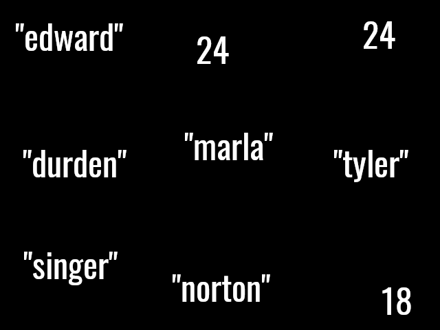

Structures of Data
#Related Data
There’s a problem with using variables to group related data. This code will crash:
(define firstname "edward")
(define lastname "norton") ; who's last name is this?
(define age 18)
(define balance 99)
(define single #true)
; would need to find new names for
; these variables because they already exist:
; e.g firstname2, lastname2, age2,
(define firstname "marla")
(define lastname "singer")
(define age 24)
(define balance 55)
(define single #false)
; same with these below
(define firstname "tyler")
(define lastname "durden")
(define age 18)
(define balance 0)
(define single #false)
Variables cant be defined with the same name so you have to rename so these have to be unique, e.g: firstname2, but it gets tedious when you reach a couple of people.
Another problem is that there is no relationship/linking of the variables: firstname, lastname, age and balance. We humans know they are related to a singular person, the age variable is Edwards’s, not Marla’s because of their close proximity and spacing of each other, and their variable names BUT what’s really happening is these are just pieces of data floating in space like the image below. Nothings preventing anyone from moving edwards lastname variable to somewhere random and way below:

#Structs
Structs can help us solve the problem of keeping related pieces of data together without creating a ton of variables. Structs are collections of data relating to 1 “unit” of something, e.g a person, a dog, a 2D point, etc. A real life analogy would be a drink and a straw, things that you can generally expect if you have of them, you might as well have the other.
(define-struct person (fn ln age balance single))
; create instances of persons
(define p1 (make-person "edward" "norton" 18 99 #true))
(define p2 (make-person "marla" "singer" 24 55 #false))
(define p3 (make-person "tyler" "durden" 18 0 #false))
; to get the pieces out of a structure out:
; aka selectors
(person-fn p1) ; edward
(person-ln p2) ; singer
(person-balance p3) ; 0 balance from tyler
#Struct Definition Syntax
(define-struct <NAME> (<FIELDNAME> ...))
; to create an instance of the struct:
(make-<NAME> <data>...)
; where <data> are strings, numbers, bools or images
; which creates accessors
(<NAME>-<FIELDNAME> <INSTANCE>)
; and a predicate to check if its an instance of <NAME>
(<NAME>? <INSTACE>) ; returns #true or #false
(define-struct person (fn ln age balance single))
(define-struct dog (name age breed))
(define p3 (make-person "tyler" "durden" 18 0 #false))
(define d1 (make-dog "flipper" 7 "pug"))
(dog? p3) ; false
(dog? d1) ; true
(dog? "yay") ; false
#Conclusion
Structs introduce a new data type to our classic 3 (numbers, strings, and booleans), just like how functions introduce a new operation to the classic string-append + - *. It groups units of data close together in 1 whole block.